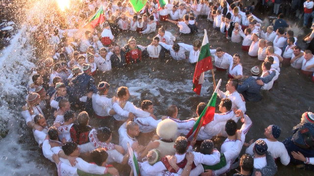
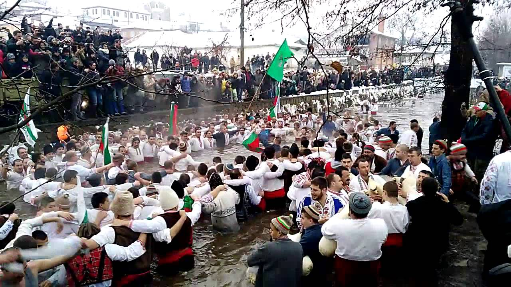
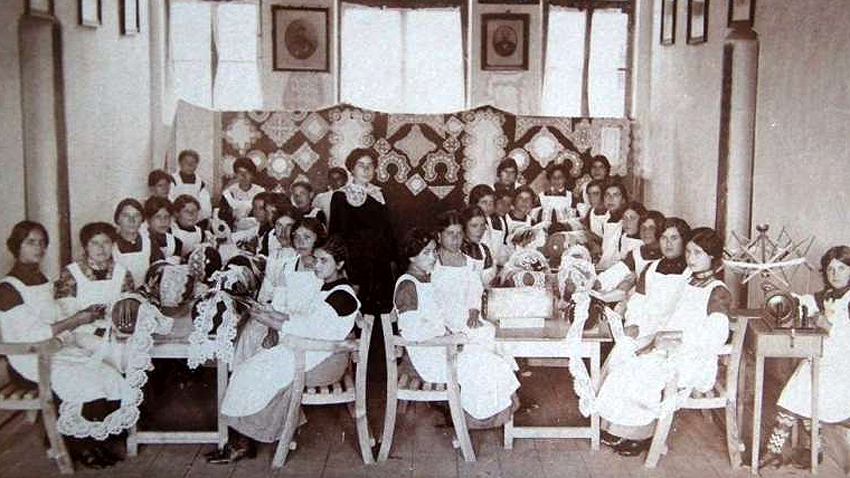
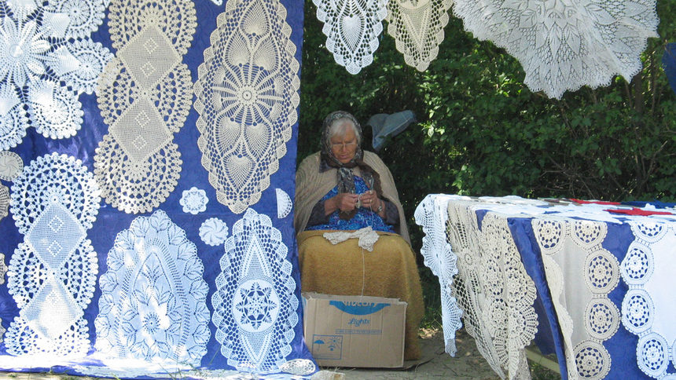

Калофер-Традиции и обичаи
Йордановден в Калофер
| Носят се легенди, че преди почвече от век "Мъжкото хоро" на калоферци в ледените води на Тунджа е имало за цел превантивно да взема страха на околните села. Днес няма османска империя, няма ги отдавна и хайдутите на Калифер Войвода, но има продажни политици, корумпирани чиновници, НПО-та с външно влияние и платени протестъри. Чужди сдружения и организации дават мило и драго за подкрепа на чалгата и гей парадите. Размиват успешно българското самосъзнание, като допускат строежа на джамии, докато се рушат църкви и се разклащат устоите на българската нация. | ||
| Снимки от празника | ||
|---|---|---|
|  |  | Мъжкото хоро в Калофер е единствено по рода си и се играе само в подбалканския град от повече от 200 г. Всяка година на Йордановден стотици се събират в Калофер, за да наблюдават легендарното мъжко хоро в ледените води на Тунджа. Този обичай е съществувал още преди Освобождението от турско робство и уникалното е това, че никъде другаде в България не се практикува. |
„Празник на калоферската дантела“
| През 1910 г. в Калофер се открива първото и единствено в страната ни Дантелено училище „Трудолюбие”. Училището е с двугодишен курс на обучение и се издържа от Калоферското общинско управление, Калоферската дружба в София и Женското дружество „Просвещение” в града. В това училище са получили знания и професионални умения в създаването и изработването на совалков тип дантела около 1 800 жени и момичета. Дантелите, плетени със совалки на цилиндър се изработват предимно в Западна Европа и са по-известни като „брюкселски”. |  |
|  | В него взимат участие плетачки на совалкова дантела от цялата страна, а също и гости от Англия, Шотландия и Белгия. В годините от създаването на Дантеленото училище до Втората световна война дантеленото производство носи значителни приходи, както за самите плетачки, така и за Калофер и допринася за стопанското му развитие. През 1935 г. Дантеленото училище е закрито. Изработването на дантелите се пренася изцяло в домашни условия. Умението за създаване и плетене на дантелите се предава от майка на дъщеря, от баба на внучка. |